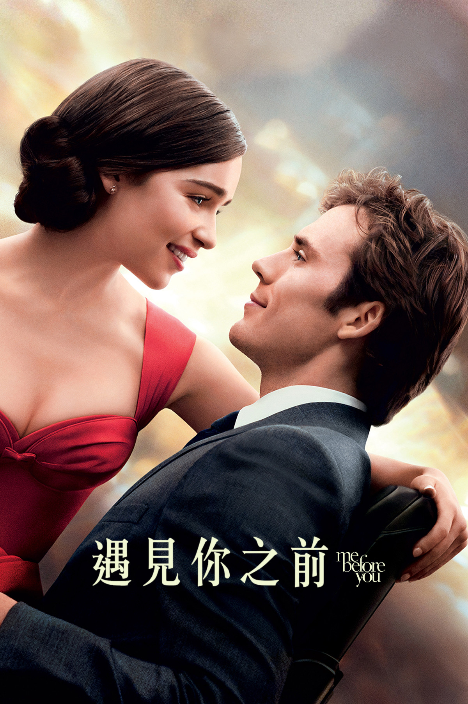
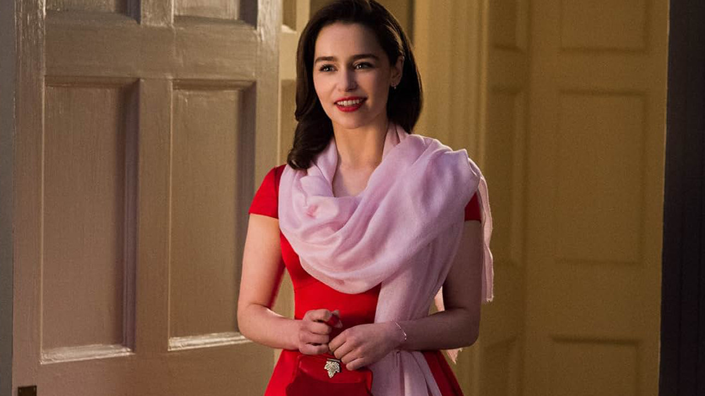
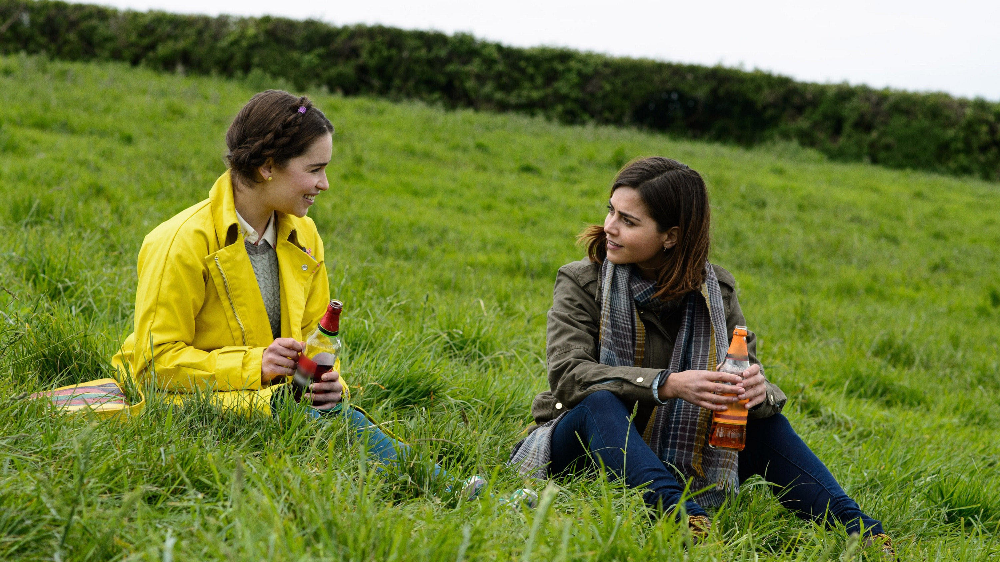
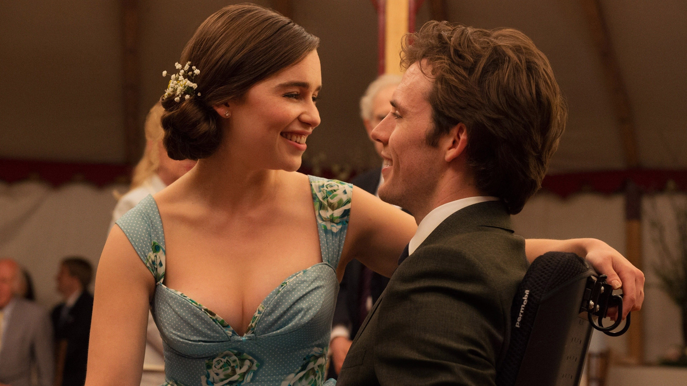
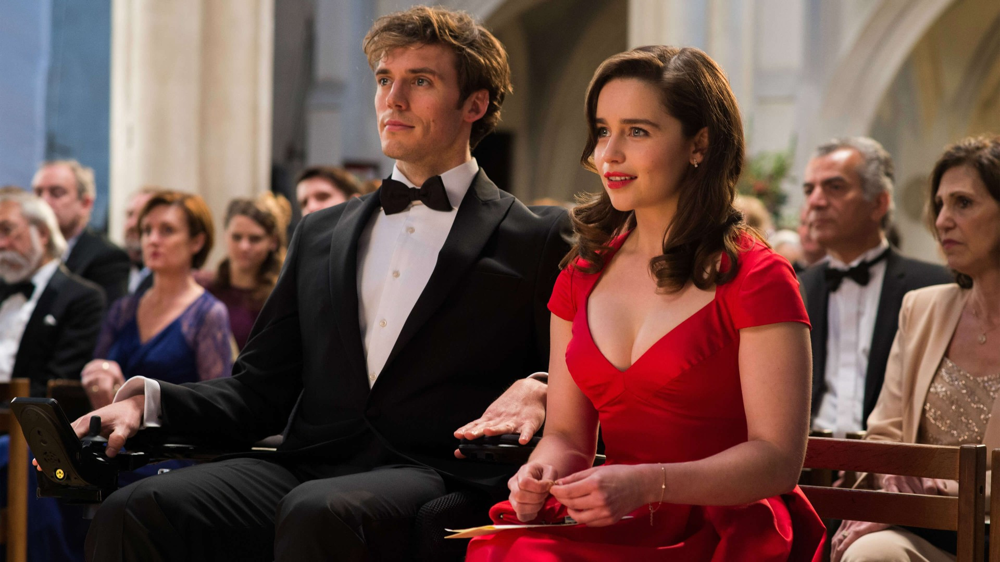

Me Before You
遇见你之前

2016 年的《遇见你之前》由西娅·夏罗克执导，乔乔·莫伊斯改编自己的同名小说， 艾米莉亚·克拉克与山姆·克拉弗林主演。它讲的不只是一段爱情，而是一个更难的问题： 爱一个人，能不能替他决定怎么活。
六个月
小露被咖啡馆解雇，家境不好、学历不高，接下了那份没人愿意干的工作：照顾一个四肢瘫痪的病人，合同六个月。 威尔·特雷纳曾是热爱旅行和冒险的银行家，一场车祸之后，他变得愤世嫉俗，把自己关在房间里。

她想让他活
她穿得花花绿绿，说些没头没脑的笑话，带他出门、看赛马、听音乐会、参加婚礼。她想让他重新笑出来。 他也真的笑了——他开始鼓励她读书、去见识更大的世界。两个人都在把对方从原地拽出来。

他早已决定
但威尔早就做了决定：再给母亲六个月，然后去瑞士。他要的不是被照顾，是像自己那样活着。 小露以为自己能改变他，直到他说：我爱你，但这不改变任何事。爱不是理由，让他以另一种方式活着也不是。

之后
他留下信和一笔钱，让她去巴黎。她在巴黎的咖啡馆里读那封信——他要她活着，活得精彩。 You only get one life. It's actually your duty to live it as fully as possible. 这大概是这部电影最温柔也最残忍的地方：他没有为她留下，却把她推了出去。
